Как дойти
Станция метро "Шоссе Энтузиастов", выход из первого вагона (если ехать из центра). Поднявшись по эскалатору, поворачиваете из стеклянных дверей направо. При выходе на улицу поворачиваете направо к улице Электродная, которая расположена перпендикуляно шоссе Энтузиастов. Двигаясь по ул. Электродная влево (удаляясь от шоссе Энтузиастов), двигайтесь все время прямо. Далее через ж/д пути, держите путь на магазин "Алми". В конце улицы вы подойдете к Т-образному перекрестку. Переходите прямо через улицу и обходите справа многоэтажное здание (башню) с зелёным магазином "Алми". Проходя вглубь двора через железные ворота, вы увидите территорию Московской Богословской Семинарии ЕХБ. Вам нужно пройти к центральному входу. На весь путь пешком вы потратите 10-12 минут.По карте
По фотографиям
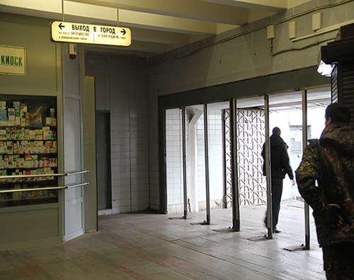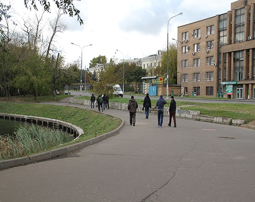 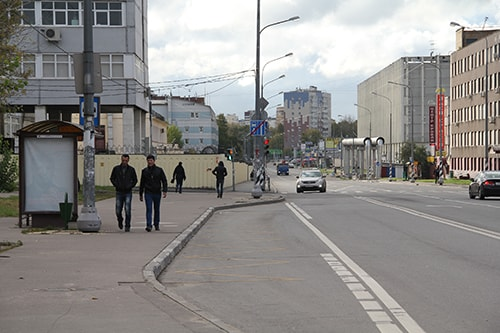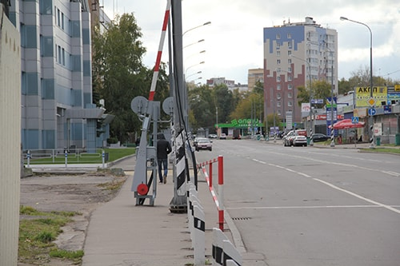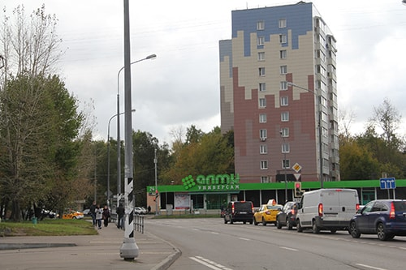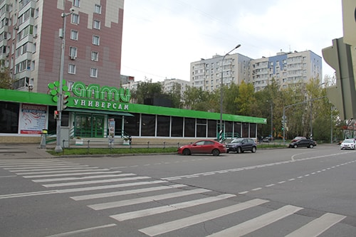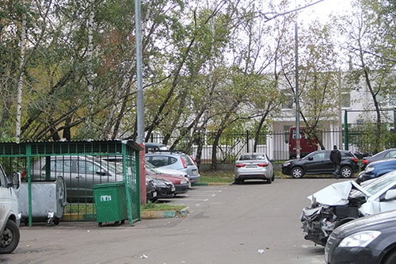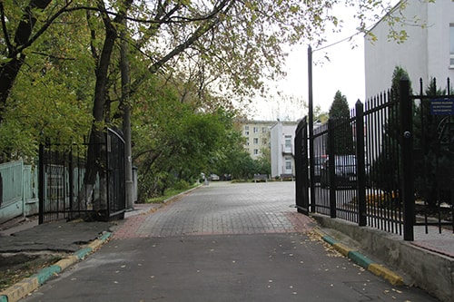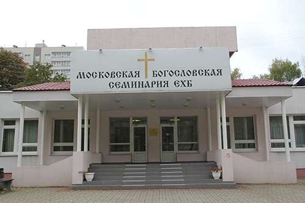
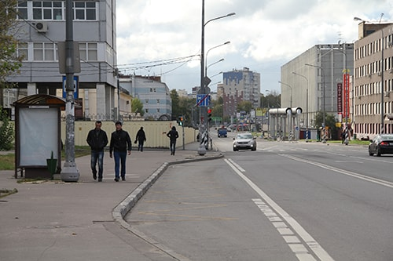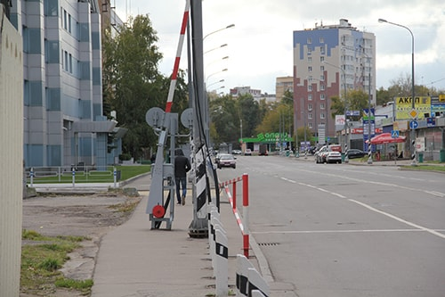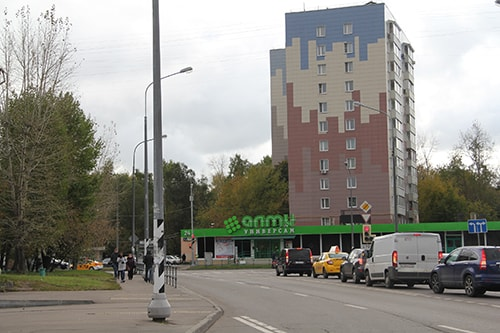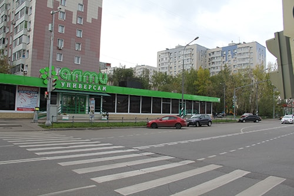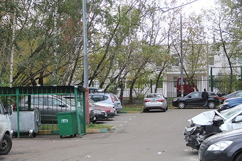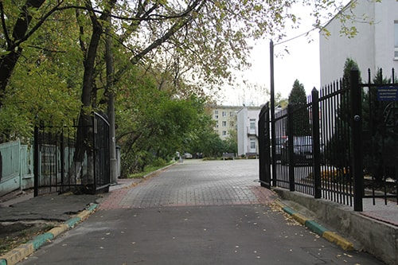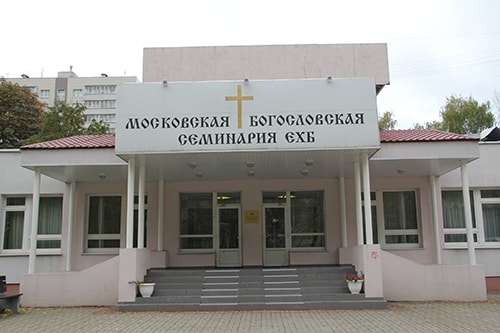
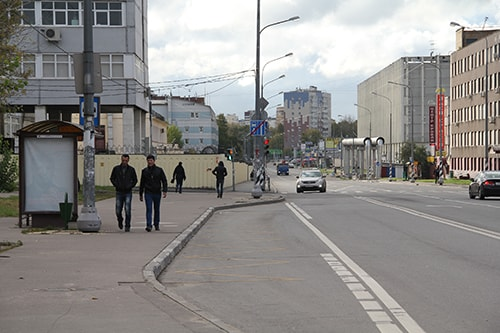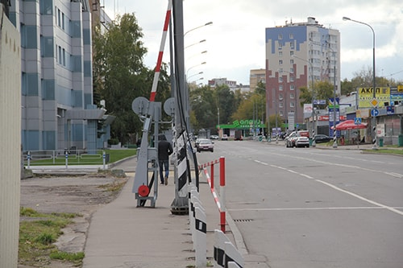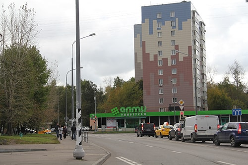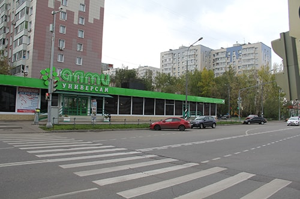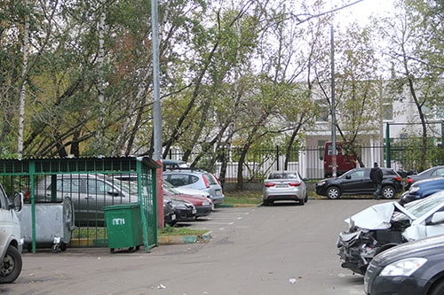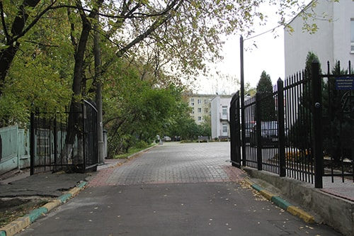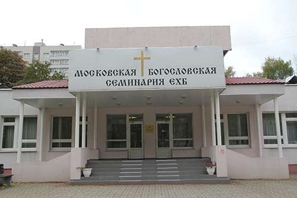